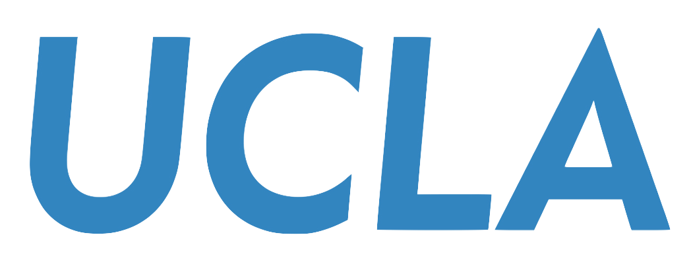

|
Maryam Haghifam Hey! I am Maryam Haghifam, a PhD student in Computer Science at the University of California, Los Angeles, advised by Prof. Yizhou Sun. My research interests include efficient inference for large language models (e.g., speculative decoding, early-exit, multi-token prediction) and long-context LLMs. I received my MSc in Computer Science from the University of Toronto, where I worked on systems for machine learning. I earned a BSc in Electrical Engineering with a minor in Computer Engineering from the University of Tehran. |

Education |
|  |
University of California, Los Angeles Department of Computer Science PhD Student Supervisor: Prof. Yizhou Sun January 2025 - Present |
|
Department of Computer Science MSc Student Supervisors: Prof. Gennady Pekhimenko and Prof. Nandita Vijaykumar September 2021 - August 2023 |
|
|
Department of Electrical and Computer Engineering BSc Student Supervisor: Prof. Vahid Shah-Mansouri September 2016 - June 2021 |
Research |
|
Proteus: Preserving Model Confidentiality during Graph Optimizations Yu Bo Gao, Maryam Haghifam, Renbo Tu, Christina Giannoula, Gennady Pekhimenko, Nandita Vijaykumar MLSys 2024 Design and Evaluation of Crowd-sourcing Platforms Based on Users’ Confidence Judgments Samin Nili Ahmadabadi, Maryam Haghifam , Vahid Shah-Mansouri, Sara Ershadmanesh Scientific Reports Journal. |
Work Experience |
|
Computer Vision and AI Researcher |
|
|
Robust and Interpretable Machine Learning Lab Machine Learning Researcher |
Service |
|
MLSys 2023: Artifact Evaluator |
|
© 2025 Maryam Haghifam. All Rights Reserved. Last updated: August 2025 |